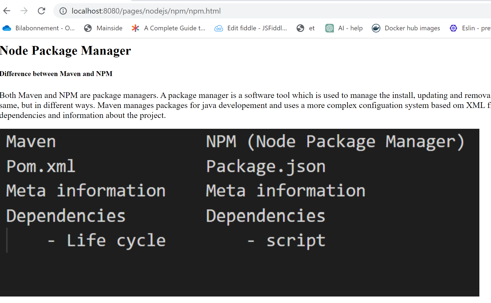

In nodejs we work with modules which is a unit of code that can be reused in other parts of the program. In nodejs, modules are typically js files. Which is the main focus in this assignement
Express is a webapplikation framework(dependency/library) for Nodejs. Express provides a set of features that simplify the process of building web applications. Its contains different features like; routing, template engines, static file serving, errorhandling etc.
Serving static files; refers to the process of serving static files such as css, html, javascript, images etc. to the clients web browser
This below means that from the browser the client has access to all static files from the given directory 'public'
app.use(express.static('public'))
express.static() - takes an argument which is the name of the directory containing the static files. When a client request a static file, the middleware function checks if the file exists in the public folder. This basicly means that the client can acces any static file stored in the public folder and type it in the browser. like shown to the right.
Middleware function is a function that access to the HTTP request(req), HTTP response(res) and the next middleware function in the applications request-response cycle (next)
Middleware functions can be added to the application by using app.use()and the middleware function express.static() is therefor called for all routes
app.get() and app.post() are also middleware functions but they are only called for the request that matches that method and route
Every time the server receives a request, it must execute the request and generate a response. Serving static files directly from the server avoids dynamic processing and therefor when a request is coming the server reads the static file directly from the disk
When serving static files they can be cached by the browser which improved scalability and performance
When serving static files from the server you have control of those files which are served in terms of adding middleware functions to modify content of files, add authentication/authentization to control who can access files.
It can help simplify the architecture ex. serve assets directly from nodejs server instead of having to set up a separate server for that